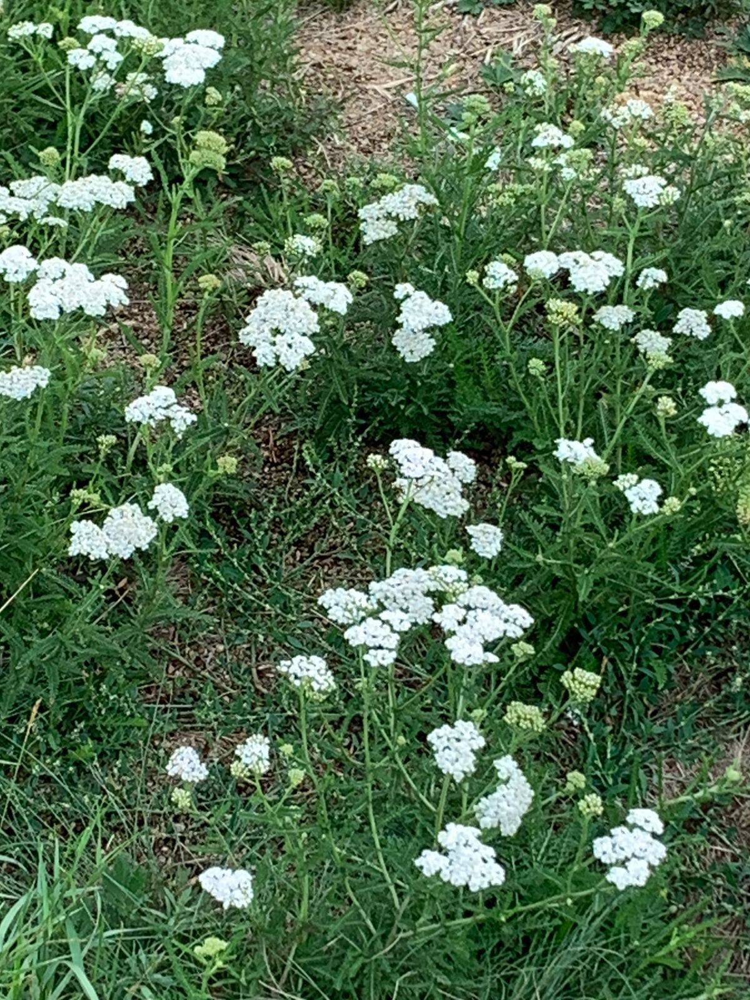

Широко распространённый в Европе и Азии вид, занесён также и на другие континенты. В России встречается практически во всех регионах. Обычное растение во всех областях европейской части России, а также во многих районах Западной и Восточной Сибири, Дальнего Востока, Кавказа и средней Азии.
Тысячелистник обыкновенный растёт в лесной, лесостепной и степной зонах, на суходольных лесных лугах, в луговых степях, среди кустарников, в разреженных лесах, на опушках, межах, вдоль дорог, по оврагам, на залежах, пустырях, свалках, в посёлках, по берегам водоёмов, по окраинам полей.
Тысячелистник — кровоостанавливающее, спазмолитическое, противовоспалительное, бактерицидное, вяжущее, противоаллергическое, желчегонное средство. Настой и жидкий экстракт из листьев и соцветий тысячелистника обыкновенного и близких к нему видов применяются как кровоостанавливающее средство, а также в составе так называемого «аппетитного» чая.
